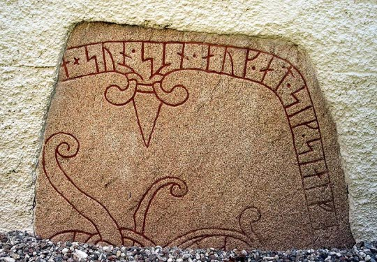

Täby kyrka
Täby kyrka ligger ungefär där stormannen Jarlabankes gård antas ha legat på 1000-talet. Dagens kyrka kan ha haft en föregångare av trä. Kanske hade Jarlabankes släkt allra först låtit bygga ett enkelt kapell på sina ägor.
Tack vare runstenarna vet vi att Jarlabankes familj varit kristen sedan två generationer. En runsten vid Broby bro (3) berättar om Jarlabankes farmor Estrids förste mans Östens pilgrimsfärd till Jerusalem. Vid Broby bro fanns också Estrids grav.
På 1000-talet var Sigtuna Mälarområdets enda stad och kristna centrum, en mötesplats för alla personer av betydelse. Där höll engelska och tyska präster mässor för kunga- och stormannafamiljerna och där hölls rådslag och marknader. Vi får anta att Jarlabanke med familj ofta solade sig i den kungliga glansen där.
Invigd begravningsplats
Var Jarlabanke och hans familj ligger begravda vet vi inte. Troligast är det på en av prästen invigd begravningsplats i anslutning till gården, eller på begravningsplatsen vid kapellet i Täby om ett sådant funnits. Att de vilar på en av Sigtunas kyrkogårdar är också en möjlighet.
Mot slutet av 1200-talet uppfördes Täby kyrka. Den har ett långhus av gråsten med brant sadeltak. Delar av en runsten murades då in i väggen. Stenen berättar om en man vid namn Holme som dött i Italien.
Sakristian tillkom under 1300-talet och efter en brand vid mitten av 1400-talet ersattes det tidigare platta innertaket av trä med tegelvalv. Samtidigt fick kyrkan ett vapenhus.
Vackra målningar
I dag är Täby kyrka mest berömd för de vackra valvmålningarna. De utfördes på 1480-talet av den berömde mästaren Albertus Pictor (Albert målare) och hans medarbetare. Scener med motiv ur Bibeln breder ut sig över valven som tecknade serier. Alberts målningar framträder ännu färgstarkt och tydligt. Altarskåpet med motiv från passionshistorien är från samma tid som kalkmålningarna.
